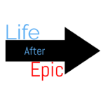

Author:
Jon Cyrus |
 |
Organization:
LifeAfterEpic.com |
Feeling stuck can be debilitating.
For me, I noticed that I began to dry up... My enthusiasm, motivation, and ambition – in short, everything that was my internal compass in the pursuit of happiness – began to flag. I knew that I wanted to make a change but complicating everything was the fact that I didn’t know what it was that I wanted. It was like being low on fuel and not knowing the next stop is to find more, so you simply languish in place.
Additonal Article content
About Author & Organization